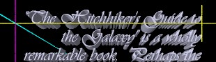

POV-Ray Object Collection
Scroll Macro
|
|
Overview
This download enables you to add Scroll objects to a POV-Ray scene by invoking the Scroll macro which is provided in the include file 'scroll.inc'. This generates a POV-Ray mesh2 object of the required shape. The mesh2 object is a 3D object of zero thickness with a clearly defined inside and outside. You can add a standard texture to this object or you can add the uv_mapping keyword so that the texture follows the contours of the scroll object. You can optionally define an interior_texture to give the back surface a different texture. A set of macros is provided to perform basic typesetting functions that enable you to easily add text of your choice to the surface of the scroll.
The Scroll object can be used to represent paper scrolls such as old-fashioned scrolls of text, wallpapers, kitchen rolls etc. or rolls of other materials, such as roller blinds for windows or rolls of tin foil for use in the kitchen. You can easily override the default dimensions of the scroll by setting a wide range of control variables.
The Scroll macro defines an array of points based upon control variable settings. All of these settings have default values so you can generate the default scroll object without specifying any settings. It then automatically invokes the Scroll_Mesh2FromArray macro from the file 'scroll_array2mesh2.inc' to generate the mesh2 object. You will need to add a texture to the resulting object within your scene file. The mesh2 object includes uv-mapping coordinates and a well-defined inside and outside, so by adding the keyword 'uv_mapping' to your texture, pigment or normal definition you can make the texture follow the contours of the object, as shown in the image on the left (see image_number '04' in the file 'scroll_documentimages.pov' for the full source for this image).
A set of typesetting macros is included with the download to perform basic text handling functions. These macros enable you to easily map passages of text onto the scroll object using uv-mapping. The file 'scroll.pov' contains a simple example illustrating how to use these macros to generate a block of justified text and how to map that text onto the scrolls (leaving margins that you can control).
Some examples are provided below. The file 'scroll.pov' illustrates the use of this macros and of the supporting files, by generating a scroll object with 'Full' justified writing on it. The 'scroll_documentimages.pov' file contains the source for most of the images in this document, including examples of uv-mapping standard POV-Ray textures and images to the scroll.
These macros were created by Chris Bartlett in August 2008 for the POV-Ray Object Collection at http://lib.povray.org/. They are based on V1.0 of the Scroll object and incorporate user feedback. This distribution is licensed under the terms of the CC-LGPL, granting you rights to use, modify and redistribute this work in original or modified form.
The default scroll object is about 0.4 POV-Ray units high with the bottom spiral centred on the Z-axis.
Return to Table of Contents
Macros
|
|
The Scroll macro is used to generate an object based upon settings defined using the
Scroll_Width,
Scroll_Length,
Scroll_BottomRollLength,
Scroll_TopRadius,
Scroll_CentreRadius,
Scroll_BottomRadius,
Scroll_TopFactor,
Scroll_BottomFactor,
Scroll_Increment,
Scroll_Top and
Scroll_Bottom
control variables which are described in detail in the next section.
The macro sets default values for each of these variables, so you can generate the default scroll object by just including the file and calling the macro. You will need to wrap the macro call inside an object statement to give it a pigment or a texture as it has none by default.
The following complete scene file generates a plain white paper scroll:
camera {location <-0.3,0.3,-0.45> look_at <0.1,0.1,0.2>}
light_source { <-10,4,-4> color rgb 1}
light_source { <-10,-7,-40> color rgb 1}
#include "scroll.inc"
object {Scroll() pigment {rgb 1}}
You can apply standard POV-Ray transformations inside the object statement, for example:
object{Scroll() pigment {rgb 1} scale 5 rotate <20,0,10> translate <-0.02,-0.01,0>}
You can assign the object to an identifier and subsequently use it as you would use any other declared object:
#declare MyScroll = Scroll()
object{MyScroll pigment {rgb 1} rotate <20,0,10> translate <-0.02,-0.01,0>}
You can apply any texture you want. The following example, illustrated on the right, produces a highly reflective surface akin to tin foil (you clearly need to provide something interesting in the scene to reflect in the foil surface as it has no colour itself). The full POV-Ray source for this image can be found in the 'scroll_documentimages.pov' file as image_number 13:
object {Scroll()
texture {
pigment {rgb 0}
normal {bumps 0.02 scale 0.1}
finish {reflection 0.97 phong 1}
}
}
The Scroll_Undef macro has no parameters.
|
|
|
The Scroll_Undef macro is defined in the file "scroll.inc". You can use it to reset all of the global variables declared by the scroll macros and the typesetting macros. This isn't needed if you only generate one scroll in a scene file, but can be handy if you want to generate more than one scroll and you want to quickly 'undef' all of the control variables, so that they pick up their default values the next time you call one of the macros that uses them.
The Scroll_Undef macro has no parameters.
|
|
|
You won't normally need to call the Scroll_Mesh2FromArray macro directly. It is contained in the file "scroll_array2mesh2.inc" and the Scroll macro automatically calls it to convert the array of points that it generates into a POV-Ray mesh2 object. The mesh2 object generated by this macro has normals and uv_mapping coordinates defined so that you can add an optional interior_texture and you can readily map textures onto the surfaces of the scroll object so that those textures automatically follow its contours.
The Scroll_Mesh2FromArray macro has 5 parameters:
|
Scroll_Array
|
The 2D array of 3D coordinates defined by the Scroll macro
|
|
Scroll_Normal
|
An optional 2D array of normals . This is not used by the Scroll macro
|
|
Scroll_IDim
|
The size of the first dimension of the array. This is always set to '2' by the Scroll macro, which generates a set of points for the left side of the scroll and a second set of points for the right edge of the scroll.
|
|
Scroll_JDim
|
The size of the second dimension of the array. This value depends on the length of the scroll and the value of the 'Scroll_Increment' control variable. This dimension normally ends up being quite large because the increment needs to be quite small to achieve smooth spirals of paper at the top and bottom of the scroll.
|
|
Scroll_JoinEnds
|
Set to '0' by the Scroll macro so that this macro does not join the ends of the mesh together
|
|
Type Setting Macros
A separate include file ('scroll_typeset.inc') is provided with this download to perform text formatting on strings of characters. This file contains a set of utility macros that work together to take strings of text and build them into a formatted block of text. The text can be wrapped based upon a specified linelength and can be Left, Right, Center or Full justified. The text block can be scaled to fit in a unit square, suitable for uv-mapping. This scaling automatically respects Left, Right, Top and Bottom margins that you can specify using control variables.
You can subsequently use the formatted text as an object pigment to write onto the Scoll object. The uv-mapping of the Scroll object allows the text to follow the contours of the paper. The file 'scroll.pov' illustrates the use of these macros to add several paragraphs of full justified text to the scroll object as illustrated in various images on this page.
|
|
The Scroll_WrapText macro parses a line of text, splitting the line into multiple lines at word breaks based upon a configurable line length setting and a configurable font file setting. It populates the array Scroll_TextArray with the results. The operation of this macro can be controlled using the
Scroll_LineLength and
Scroll_FontFile
control variables explained below. This macro also uses and exposes the
Scroll_LineIndex and the
Scroll_TextArray
variables.
See the scene file 'scroll.pov' for an example of the use of this macro.
This macro has one parameter:
|
Scroll_TextIn
|
The string of text that is to be split up. This string can contain escaped characters, such as \" to specify a double quote within a double quoted string.
|
|
|
|
The Scroll_NewParagraph macro adds one or more carriage returns/line throws to the Scroll_TextArray array. Note that, although it accepts non-whole values it can only ever add a whole number of elements to the array, so, if you specify '1.4' it will add two line throws. This macro uses and exposes the Scroll_LineIndex and the Scroll_TextArray variables.
This macro has one parameter:
|
Scroll_ParagraphSpacing
|
A number controlling the number of line throws.
|
|
|
|
The Scroll_MakeTextObject macro generates a CSG object built of multiple text objects with each line of text being taken from the Scroll_TextArray array. The operation of this macro can be controlled using the
Scroll_LineLength,
Scroll_FontFile,
Scroll_LineSpacing,
Scroll_ScaleOverruns,
Scroll_TextSlant and
Scroll_Orientation
control variables. This macro also uses the
Scroll_LineIndex and the
Scroll_TextArray
variables.
The first line of text in the object returned by this macro will be in the default location above the x-axis with the bottom left corner of the first character close to the origin. Subsequent lines of text are positioned further and further below the x-axis. The text will be of the default size and will be of the default orientation unless Scroll_Orientation is set to "Landscape", in which case the CSG object will be rotated around the z-axis by 90 degrees.
This macro has one parameter:
|
Scroll_Justification
|
| Left |  |
|---|
| Right |  |
|---|
| Centre | |
|---|
| Full | |
|---|
The words "Left", "Right", "Centre"/"Center" or "Full", or any abbreviation of those words can be specified. This parameter controls how the text is to be justified.
This parameter is not case sensitive, so "FULL" or "full" will work equally well. Abbreviations down to one character are accepted, so "L", "R", "C" or "F" is sufficient. The default is to produce left justified text and is used if the string specified is empty or is not recognised.
With Full justification the words are spread out to fill the line length as specified using Scroll_LineLength by increasing the spacing between words. If a line consists of a single block of characters without spaces (for example a URL) then no space is added. If a line is already longer than the specified line length then the behaviour will depend upon the setting of the Scroll_ScaleOverruns variable which, if set to 1 will scale down the text object in the X direction so that it fits within the line length.
The last line of a paragraph is not fully justified. This is identified by checking the last character on a line to see if it's a full-stop, a question mark or an exclamation mark.
|
|
|
|
You won't need to call the Scroll_FullJustification macro directly. This macro is called automatically by the Scroll_MakeTextObject macro when required. It takes a text string and adjusts the spaces between words to full justify the line to a specified length. It uses the font file that has been specified using control variable Scroll_FontFile to measure the dimensions of text.
This macro has three parameter:
|
Scroll_TextIn
|
The text string to be processed.
|
|
Scroll_TextWidth
|
The current width of the text in POV-Ray units. This is the standard width of the text using the appropriate font file before any scaling has taken place.
|
|
Scroll_LineLength
|
The desired width of the text when fully justified in POV-Ray units. This is the standard width of the text using the appropriate font file before any scaling has taken place. Typically a size of 12 units will result in about 24 characters per line, but this depends on the particular font specified.
|
|
|
|
The Scroll_FitToUnitSquare macro fits a block of text into a unit square centred at <0.5,0.5,0>, respecting any margins specified.
This is intended to operate on the CSG text object generated by the Scroll_MakeTextObject macro, making it ready for uv-mapping to a scroll object.
The image on the left illustrates how this macro scales the text to fit inside a unit square, respecting the margins specified. It also displaces it by -0.5*y so that it is in an ideal position for uv-mapping as an object pattern. The white box shown is a 1 unit cube centred at <0.5,0.5,0.5>, to illustrate a 15% margin at the top and a 10% margin to the left and right and beneath the text.
This macro changes the scale and position of the text object. The POV-Ray object passed into this macro should have the orientation you desire. This macro does not reorient the object.
This macro has one parameter:
|
Scroll_ObjectIn
|
The CSG text object to be processed.
|
|
|
|
You won't need to call the Scroll_CompareStrings macro directly. The Scroll_MakeTextObject macro uses this macro to compare the contents of its Scroll_Justification parameter with the permitted values to establish whether the writing is to be "Left", "Right", "Centre", or "Full" justified.
This macro returns a '0' if the two strings match or a '1' if they don't (to be consistent with the inbuilt 'strcmp' function). This is a small utility macro, coded using only terms that can be completely embedded with the #case clause of the #switch directive. Both string are converted to uppercase before being compared, making the comparison case-insensitive. The first string can be an abbreviation of the second string. The length of both strings needs to be greater than the minimum length parameter.
This macro has three parameters:
|
Scroll_String1
|
The first string. This is the string that you want to compare with the reference string.
|
|
Scroll_String2
|
The second string. This is the full reference string. Scroll_String1 can be an abbreviation of this string.
|
|
Scroll_MinimumLength
|
The minimum string length accepted for the comparison. Both strings must be at least this long.
|
|
|
|
You won't need to call the Scroll_TypeSet_Undef macro directly. It is defined in the file "scroll_typeset.inc" and called automatically by the Scroll_Undef macro in the "scroll.inc" file. It resets all of the global variables declared by the various type setting macros. This isn't needed if you only need to generate one block of typeset text in a scene file, but can be handy if you want to generate more than one and you want to quickly 'undef' all of the control variables set during the first call in order that they pick up their default values the next time you call one of the macros that uses them.
The Scroll_TypeSet_Undef macro has no parameters:
|
Return to Table of Contents
Control Variables
| Variable | Description |
|---|
| Scroll_WidthScroll_Width |
Decimal value used by the Scroll macro to control the width of the paper (in POV-Ray units). The default value is 0.3.
|
|---|
| Scroll_Length |
Decimal value used by the Scroll macro to control the length of the paper (in POV-Ray units). The default value is 0.9.
|
|---|
| Scroll_Top |
Decimal value used by the Scroll macro to control the height of the top spiral of paper (in POV-Ray units). The top spiral is centred on a line parallel to the Z-axis, but displaced in the +Y direction. The default value is 0.35, which centres the top spiral at <0,0.35,0>.
|
|---|
| Scroll_Bottom |
Decimal value used by the Scroll macro to control the height of the bottom spiral of paper (in POV-Ray units). The bottom spiral is centred on a line parallel to the Z-axis, but can be displaced in the +Y direction. The default value is 0, which centres the bottom spiral at the origin.
|
|---|
| Scroll_BottomRollLength |
Decimal value used by the Scroll macro to control the length of the paper wrapped into a spiral at the bottom of the scroll (in POV-Ray units). A negative value can be specified, cutting away at the middle section and, if long enough, into the top spiral. The default value is 0.3.
Animation
This variable can be controlled by the clock and used in animations to roll paper and printed text up from the bottom spiral into the top spiral (or visa versa). There is an example which is defined as image number 6 in the file "scroll_documentimages.pov". This illustrates the technique and was used to generate the animation on the right. The only change from each frame to the next is in the clock value that is used to define the Scroll_BottomRollLength variable. Note that POV-Ray writes out the individual images required from animation but doesn't produce final animated files, you'll need another tool to put the images together into the animation format of your choice. There are quite a few free tools available for this. This animated gif was put together using the GIF constructor set.
|
|---|
| Scroll_TopRadius |
Decimal value used by the Scroll macro to control the radius of the top spiral of paper (in POV-Ray units). This is the radius at the outer limit of the spiral where it meets the middle section. The default value is 0.03.
|
|---|
| Scroll_CentreRadius |
Decimal value used by the Scroll macro to control the radius of the middle section of paper (in POV-Ray units). The default value is 0.5. To get a virtually flat middle section you can specify a large number (e.g. 1000). If you increase the distance between the top and bottom scrolls of paper you need to increase this radius to get a comparable curvature in the middle section.
|
|---|
| Scroll_BottomRadius |
Decimal value used by the Scroll macro to control the radius of the bottom spiral of paper (in POV-Ray units). This is the radius at the outer limit of the spiral where it meets the middle section. The default value is 0.03.
|
|---|
| Scroll_TopFactor |
Decimal value used by the Scroll macro to control the percentage decrease in radius of the top spiral of paper at each successive point on that spiral. The tightness of the spiral of paper is a combination of this value and the increment size as controlled by the Scroll_Increment variable. Increasing this factor creates a looser coil because the radius is reduced more with each step. If you increase the Scroll_Increment you will need to decrease this factor to keep the spiral at a comparable tightness. The default value is 1.
|
|---|
| Scroll_BottomFactor |
Decimal value used by the Scroll macro to control the percentage decrease in radius of the bottom spiral of paper at each successive point on that spiral. The tightness of the spiral is a combination of this value and the increment size as controlled by the Scroll_Increment variable. Increasing this factor creates a looser coil because the radius is reduced more with each step. If you increase the Scroll_Increment you will need to decrease this factor to keep the spiral at a comparable tightness. The default value is 1.
|
|---|
| Scroll_Increment |
Decimal value used by the Scroll macro to control the smoothness of the curves that the paper follows by defining the spacing of the points along the length of the mesh2 object (in POV-Ray units). The default value is 0.01 which is suitable for the other default dimensions. If you specify larger dimensions you can increase this value to reduce the number of points required to generate the mesh2 object.
|
|---|
| |
|---|
| Scroll_LineLength |
Decimal value used by the typesetting macro Scroll_WrapText to control the maximum length of a line of text and by the Scroll_MakeTextObject macro when the "Full" parameter is specified (which passes the value as a parameter to the Scroll_FullJustification macro) to control the length of a fully justified line of text. This value is specified in POV-Ray units and is used with the font before any scaling takes place. The default value is 12 which is likely to give you about 24 characters per line of text, depending upon the type of font used and whether it generates uniformly spaced characters or variable spacing.
|
|---|
| Scroll_FontFile |
String value used by the typesetting macro Scroll_WrapText to create temporary objects that it uses to measure how many words it can fit on a line and by the Scroll_MakeTextObject macro to generate the text object. The default font file is "timrom.ttf" which looks for the Times Roman True Type font.
Notes:
- Fonts are system specific. If the file you specify (or the default font file, if you don't specify one) is not found on your system, an error will be displayed when you attempt to render the scene.
- Some of the examples included in this download may use font files that are not on your system, so may need updating to be able to render successfully.
- Bold and Italic fonts are usually available as separate files in the fonts directory on your file system.
- On Windows, font files are usually stored in a system directory e.g. "C:\Windows\Fonts".
|
|---|
| |
|---|
| Scroll_LineSpacing |
Decimal value used by the Scroll_MakeTextObject macro to control the amount of space that it uses between successive lines of text, including blank lines used to separate paragraphs. The default value is 1 which generates single spaced carriage returns. Typical values are 1, 1.5 and 2, but you can use any positive whole number in that sort of range.
|
|---|
| Scroll_ScaleOverruns |
True/False switch used by the Scroll_MakeTextObject macro when using "Full" justification to determine what it should do about single 'words' that are longer than the specified line length. A 'word' in this context is any string of characters that does not contain a space. If Scroll_ScaleOverruns = 1 the offending line is scaled horizontally so that it fits within the column of text. If Scroll_ScaleOverruns = 0 the line will be allowed to extend past the end of the column of text. The default value is 1 which scales lines which would otherwise overrun the line length.
|
|---|
| Scroll_TextSlant |
Decimal value used by the Scroll_MakeTextObject macro to slant text to the left or right using the Shear_Trans macro. Positive values produce an effect similar to using an Italic font. Negative values slant the text in the opposite direction. The value needs to be numeric with typical values ranging from -1 to 1. The image on the right illustrates the use of a Scroll_TextSlant setting of -1 The default value is 0 which doesn't slant the text.
|
|---|
| |
|---|
| Scroll_TopMargin |
Decimal fraction between 0 and 1 used by the Scroll_FitToUnitSquare macro to control how much of a margin is left at the top of the paper. This is as a proportion of the total length of the scroll of paper including all of the paper wrapped around the top and bottom spirals. The default value is 0.3 which leaves a margin of 30% of the paper length blank at the top. If you want the text to start on the central part of the scroll where it is most visible, then this value is likely to be relatively high.
|
|---|
| Scroll_BottomMargin |
Decimal fraction between 0 and 1 used by the Scroll_FitToUnitSquare macro to control how much of a margin is left at the bottom of the paper. This is as a proportion of the total length of the scroll of paper including all of the paper wrapped around the top and bottom spirals. The default value is 0.32 which leaves a margin of 32% of the paper length blank at the bottom. If you want the text to end on the central part of the scroll where it is most visible, then this value is likely to be relatively high.
|
|---|
| Scroll_LeftMargin |
Decimal fraction used by the Scroll_FitToUnitSquare macro to control how much of a margin is left down the left hand side of the paper. This is as a proportion of the total width of the scroll of paper. The default value is 0.1 which leaves a margin of 10% of the paper width down the left.
|
|---|
| Scroll_RightMargin |
Decimal fraction used by the Scroll_FitToUnitSquare macro to control how much of a margin is left down the right hand side of the paper. This is as a proportion of the total width of the scroll of paper. The default value is 0.1 which leaves a margin of 10% of the paper width down the right.
|
|---|
| Scroll_Orientation |
String value used by the Scroll_MakeTextObject macro to orient the text object that it generates.
If "Portrait" is specified, the macro returns a CSG text object using the default orientation for text objects.
If "Landscape" is specified, the macro rotates the generated object 90 degrees around the Z-axis before.
Image 3 in the file 'scroll_documentimages.pov' illustrates the use of this control variable to produce the image shown on the right with text in landscape mode. The default value is "Portrait".
Note: The margin settings used by the Scroll_MakeTextObject macro relate to the top, bottom, left and right of the scroll object, rather than the orientation of the object passed into it. It does not therefore take any account of the Scroll_Orientation variable.
|
|---|
| |
|---|
| Scroll_LineIndex |
You won't normally need to use this variable directly. This integer value is used to pass information between the typesetting macros Scroll_WrapText, Scroll_NewParagraph and Scroll_MakeTextObject. This variable holds the current element number in the Scroll_TextArray and therefore shows how many lines of text have so far been defined. The Scroll_WrapText and Scroll_NewParagraph macros initialise this value to '0' if it is not already set. They both increment this value each time they add lines to the array. The Scroll_MakeTextObject macro reads this value to determine how many elements in the Scroll_TextArray have been set.
You don't need to set this variable unless you add lines to the Scroll_TextArray array without using the supplied macros.
|
|---|
| Scroll_TextArray |
You won't normally need to use this variable directly. This one dimensional array of strings is used to pass information between the typesetting macros Scroll_WrapText, Scroll_NewParagraph and Scroll_MakeTextObject. This array holds the various lines of text that will be used to make a text object. The Scroll_WrapText and Scroll_NewParagraph macros initialise a 1000 element array if it is not already set. They both fill in elements in this array each time they are called. The Scroll_MakeTextObject macro reads this array to determine the text that needs to be used to generate a CSG object containing multiple text objects.
You don't need to manipulate this array yourself unless you wish to implement additional functionality.
|
|---|
Return to Table of Contents
Files
You should have received the following files with this distribution. The latest versions are available from http://lib.povray.org.
Main Files
| scroll.inc |
This is the main include file containing the Scroll macro described above.
|
|---|
| scroll.pov |
This is a sample scene file illustrating the use of the macro.
|
|---|
| scroll.html |
This document.
|
|---|
| scroll_typeset.inc |
This file contains a set of macros to type set strings of text in a manner suitable for use as an object pattern to display on the paper scroll.
This file contains the macros:
Scroll_WrapText,
Scroll_NewParagraph,
Scroll_MakeTextObject,
Scroll_FullJustification,
Scroll_FitToUnitSquare,
Scroll_CompareStrings and
Scroll_TypeSet_Undef.
|
|---|
| scroll_array2mesh2.inc |
This file contains the Scroll_Mesh2FromArray macro that generates a mesh2 object based upon a 2D array of 3D coordinates.
|
|---|
| scroll_documentimages.pov |
This is the scene file used for generating the various images used in this document. The entire set of images can readily be regenerated using the animation options documented at the top of the scene file.
|
|---|
Return to Table of Contents
Theory
The maths behind the scroll is relatively straight forwards. The top and bottom spirals are just drawn by taking the outer most point on the spiral and rotating it in steps, reducing the radius with each step. The central section is an arc. The first thing calculated is the centre of that arc (using little more than Pythagoras' theorum). The various angles are then derived from the three centre points using the POV-Ray's VAngleD macro. The contact points where the top and bottom spirals join onto the central section are then calculated using the POV-Ray vrotate function to rotate points that are the required radii around from the x-axis using those angles. The only real maths involved is therefore in calculating the centre point of the central arc. POV-Ray does the rest.
In the diagram on the right, r1 is the outermost radius of the lower spiral (Scroll_BottomRadius), r2 is the outermost radius of the upper spiral (Scroll_TopRadius) and r0 is the radius of the central curved section (Scroll_CentreRadius). The bottom spiral is centred at the origin. The top spiral is directly above the bottom spiral on the y-axis, so we know y2.
- Equation 1:
- x12+y12 = (r0+r1)2
- therefore
- x12 = (r0+r1)2 - y12
- Equation 2:
- x12+(y2-y1)2 = (r0+r2)2
- therefore
- x12 = (r0+r2)2 - (y2-y1)2
combining equation 1 and 2 we get:
- Equation 3:
- (r0+r1)2 - y12 =
(r0+r2)2 - (y2-y1)2
-
r02+r12+2.r0.r1 - y12 =
r02+r22+2.r0.r2 -
y12-y22+2.y1.y2
- the r02-y12 on either side cancels out, giving
-
r12+2.r0.r1 =
r22+2.r0.r2 -
y22+2.y1.y2
-
y1 = (r12+2.r0.r1 -
r22-2.r0.r2 +
y22) / 2.y2
Equation 3 gives us all we need to work out y1.
We then use that in equation 1 to calculate x1
If 'impossible' values are specified by the user the Scroll macro can fail in various ways, including generating parser errors if it ends up trying to take the square root of a negative number or dividing by zero. The Scroll macro doesn't currently check for such invalid conditions.
At the points of transition between the spirals and the central arc it may be possible to see the join if the change in radius (controlled by Scroll_TopFactor and Scroll_BottomFactor) is large.
Return to Table of Contents
Examples
|
All of the control variables have defaults, so you can generate the default object by just including the file and calling the macro:
camera {location <-0.32,0.3,0> look_at <0.1,0.14,0>}
light_source { <-10,4,-4> color rgb 1}
light_source { <-10,-7,-40> color rgb 1}
#include "scroll.inc"
object {Scroll() pigment {rgb 1}}
|
|
You can apply standard POV-Ray transformations by wrapping the call in an object statement:
object{Scroll() rotate y*180}
|
scroll.pov
Further examples can be found in the scroll.pov scene file which generates a scene containing a paper scroll with writing on. The image on the right shows the default view. The file also contains a commented out camera definition to provide the front view shown on the left.
|
scroll_documentimages.pov
The file scroll_documentimages.pov contains the source for most of the images in this document along with animation options that enable you to regenerate all of those images. The images in scroll_documentimages.pov are all numbered.
Image Number 4 (Left) shows how to uv-mapping the standard POV-Ray hexagon pattern to the scroll.
Image Number 5 (Right) demonstrates using an image map as a repeating pattern.
Image Number 6 (Below Left) illustrates the use of the Scroll_BottomRollLength variable to animate the scroll.
Image Number 14 (Below) provides an example of how to generate kitchen roll, where there is no bottom scroll (Scroll_BottomRollLength is 0 or negative).
Image Number 12 (Below Right) provides an example of a highly reflective surface that could be used to emulate a roll of tin foil.
|
Return to Table of Contents